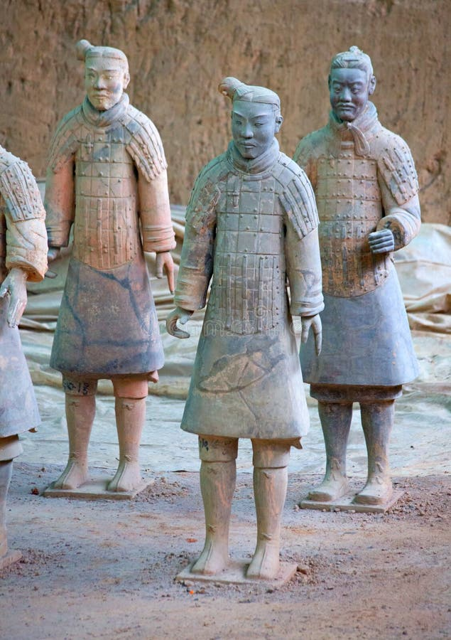
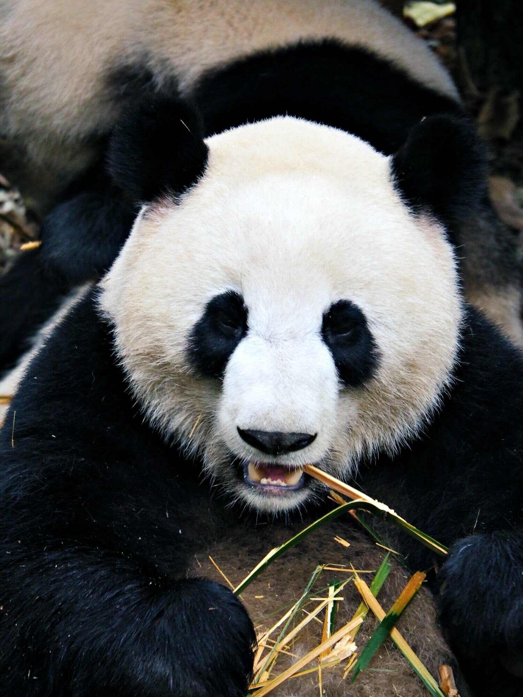
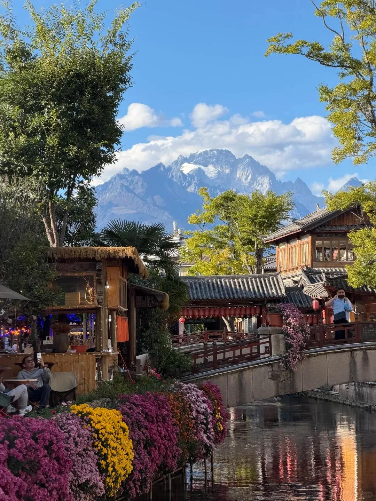

Imperial capital
Beijing
Great Wall, Forbidden City, hutong alleys — and the best roast duck in the world.
The real China — quiet alleys, forbidden corners, street food your hotel will never recommend, temples no tour bus stops at. Written by travelers who got off the bus, for travelers who plan to.
Seven proven starting points, each with its own rhythm — imperial cities, karst rivers, sky-high cliffs, old towns, and living traditions.



China is not hard to travel — it is simply different. Once you understand the basics, it becomes one of the most rewarding countries on earth.
English signage is everywhere in major cities, high-speed rail is world-class, and mobile payment is a one-time setup — not a daily struggle.
Five thousand years of continuous civilization means layers of history under every street: dynasties, temples, dialects, and cuisines that change every 200 kilometers.
The famous sights are famous for a reason. But the real China shows itself in teahouses, night markets, park dancers, and conversations you never planned.
Day-by-day itineraries with transport, stays, and honest notes on pacing — no filler stops.
Beijing → Xi'an → Shanghai. Imperial walls, the Terracotta Army, and a modern skyline — the perfect first trip.
Zhangjiajie → Guilin → Yangshuo. Sandstone pillars, karst peaks, and bamboo-raft mornings.
Shanghai → Hangzhou → Chengdu → Lijiang. Gardens, pandas, tea, and old-town nights.
Regional dishes worth crossing the country for — plus the customs and martial arts that turn a visit into belonging.
Peking duck, hand-pulled noodles, hotpot, mooncake — where they come from and exactly how to eat them.
Festivals, tea ritual, temple etiquette, red packets, and the morning parks where daily China happens.
Tai chi, Shaolin kung fu, qigong, and the internal arts — where to see them, and where to learn.
Tell us your dates, your pace, and what you love — we will sketch a realistic day-by-day plan, free of tourist-trap padding.
Been there? Got a question? Tell us what you found on the hidden roads — every note gets a reply within 48 hours.
Opens your mail app — nothing is stored on any server. We read and reply to every entry.
Each card opens a full guide: when to go, what to see, how to get around, and the mistake most visitors make.
Questions about an itinerary, a correction to a guide, or a collaboration — we read everything and reply within 48 hours.
One email a month: seasonal travel tips, new guides, and honest practical updates. No spam — unsubscribe anytime. Your address opens your mail app, ready to send — nothing is stored on our server (we have none).
Prefer email? Write to us directly — we check it daily.
No. We are an independent editorial guide. We recommend routes and honest options, but we never sell packages or take commissions from operators.
Yes — use the form with your dates and style, and we will send a realistic day-by-day sketch with transport and stay suggestions.
We review practical sections (visas, payments, transport) every season. When rules change, we update and note the revision date.